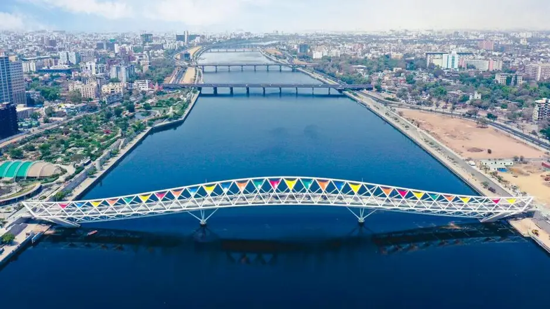
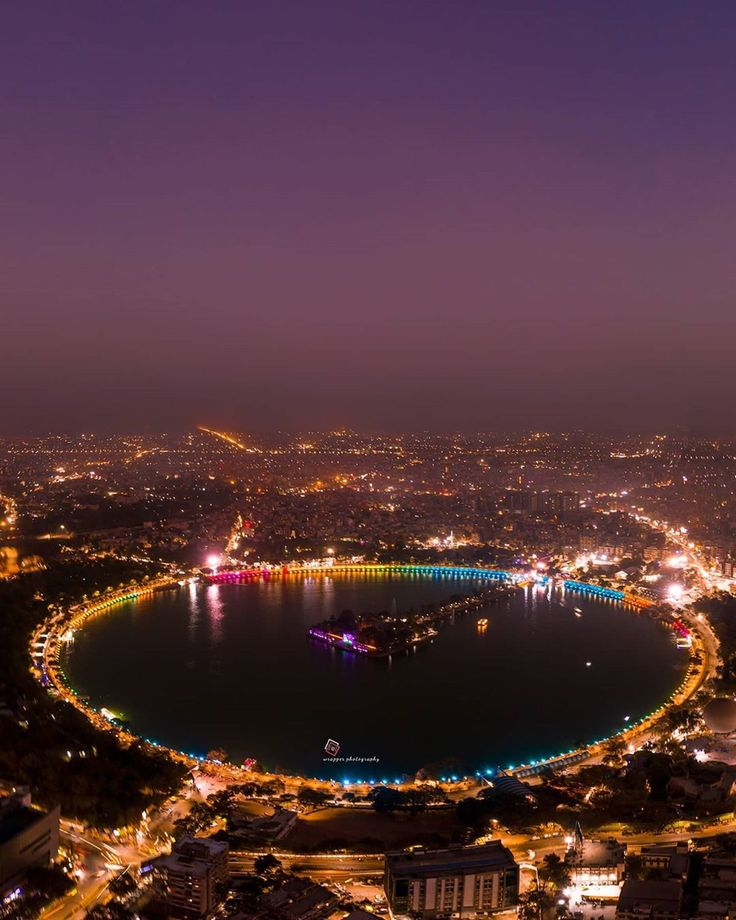
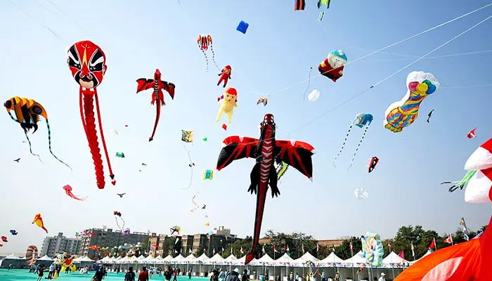

Embrace the cozy nights, frosty mornings, and the sparkle of winter festivities. December is here to enchant your soul.
December in Ahmedabad is the perfect time to experience the city's cool breeze and festive vibes. The weather is pleasant, making it the ideal time to explore outdoor events.
The Kankaria Festival, held in December, showcases a variety of cultural performances, food stalls, and recreational activities around the scenic Kankaria Lake.
Ahmedabad's famous Kite Festival kicks off in January, but the excitement begins in December as people prepare their kites, create beautiful designs, and organize events.
